Tres planetas distintos para la misma premisa: un mundo pequeño y oceánico donde la sombra de su luna levanta una región del mar, el agua flota como un segundo cielo y debajo queda al aire un paisaje que normalmente está sumergido.
En ninguna propuesta queda nada de la ronda anterior: ni el Gancho, ni la Cresta, ni el Salar, ni los Dientes, ni la Fosa, ni el cráter. Cada planeta se diseñó en este orden: primero la masa y la silueta, después la geología y los materiales, y por último cómo los cambia el eclipse. Las vistas orbitales son mapas pintados a mano y proyectados sobre el cuerpo para comprobar cómo se leen; los estudios cercanos son ilustraciones. Ninguna imagen es un modelo final.
Un planeta claro: casi todo es un banco de arena somero de color turquesa. Lo recorren venas oscuras, que son los cañones ahogados de sus antiguos ríos. Uno de esos ríos siguió bajo tierra, y donde la cueva se hundió quedó una fila de pozos azules. El agua de esos pozos es lo único que sube.
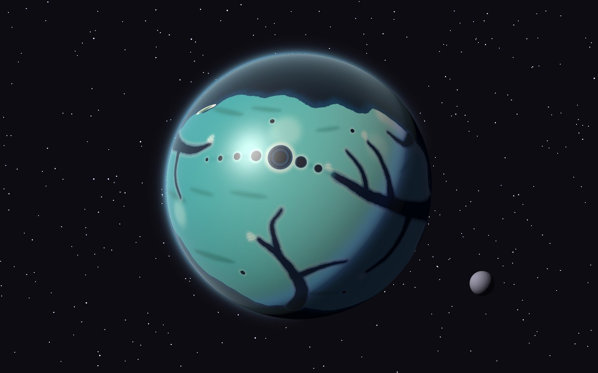
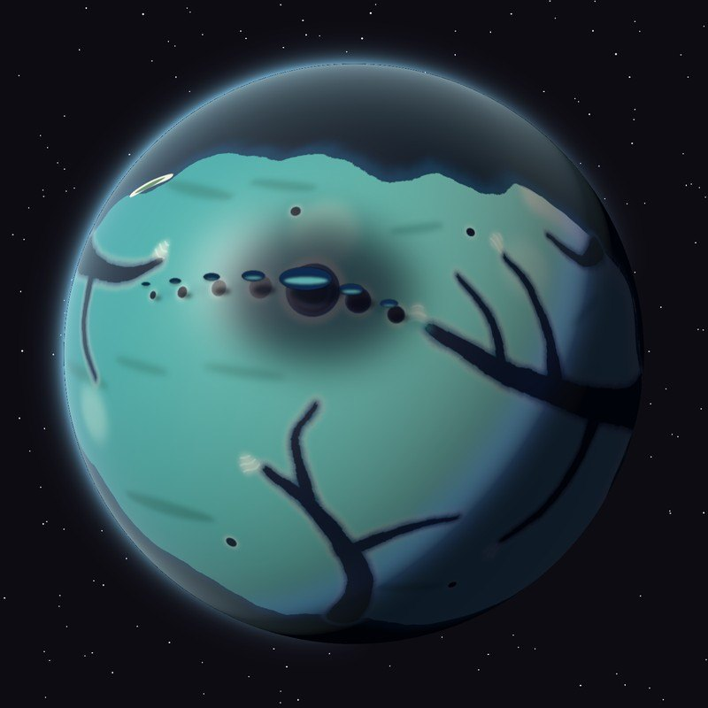
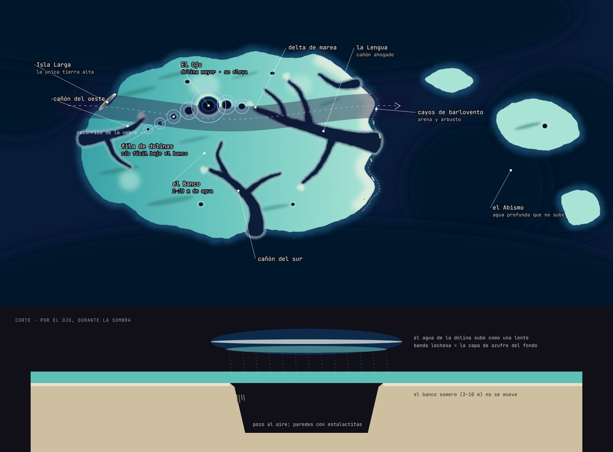
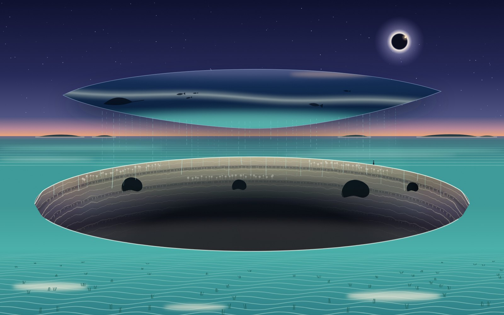
Bancos de carbonato y la Lengua del Océano (Bahamas); Gran Agujero Azul (Belice) y Dean's Blue Hole; capa de sulfhídrico de las dolinas estratificadas; lirios de mar; cayos de arena con arbusto bajo. Durante la totalidad, el horizonte se ve cálido en los 360°: es el único momento de luz cálida.
Umbral es un binario de contacto: dos cuerpos que se tocaron y se quedaron unidos. El punto más bajo es el cuello, así que toda el agua del planeta acaba allí, en un único estrecho que da la vuelta a la cintura. Cada lóbulo es de un material: uno húmedo, de basalto y musgo; el otro seco, de creta blanca.
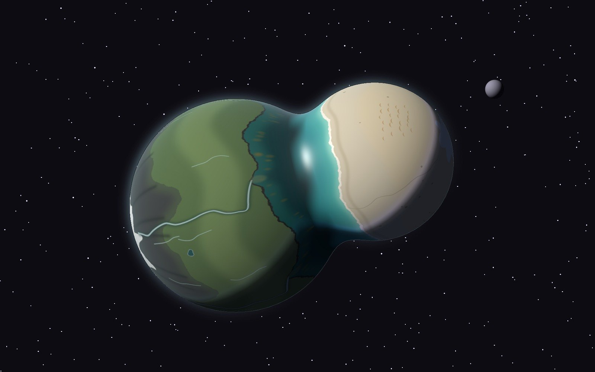
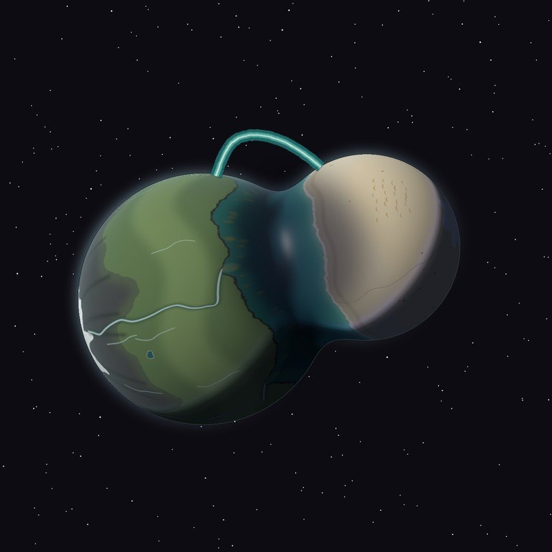
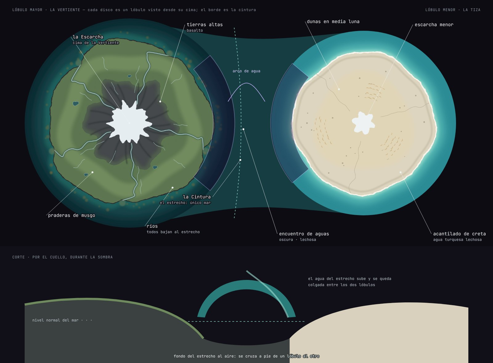
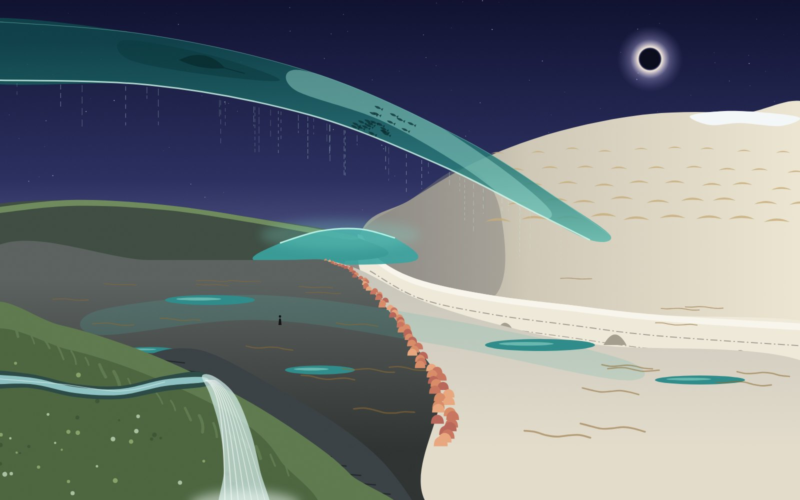
Binarios de contacto (Arrokoth, cometa 67P); encuentro de aguas del río Negro y el Solimões; basalto columnar (Calzada del Gigante); acantilados de creta con bandas de sílex (Étretat, Seven Sisters); dunas barjanas. Escarcha en las dos cimas: son lo más alto y lo más frío del planeta.
Un océano sin continentes, de agua ligera y tan transparente que desde la órbita se ve el fondo. Por el fondo corre un rift, el Collar, y en sus cubetas se acumula un segundo líquido: una salmuera densa y violeta que no se mezcla. Son lagos dentro del mar.
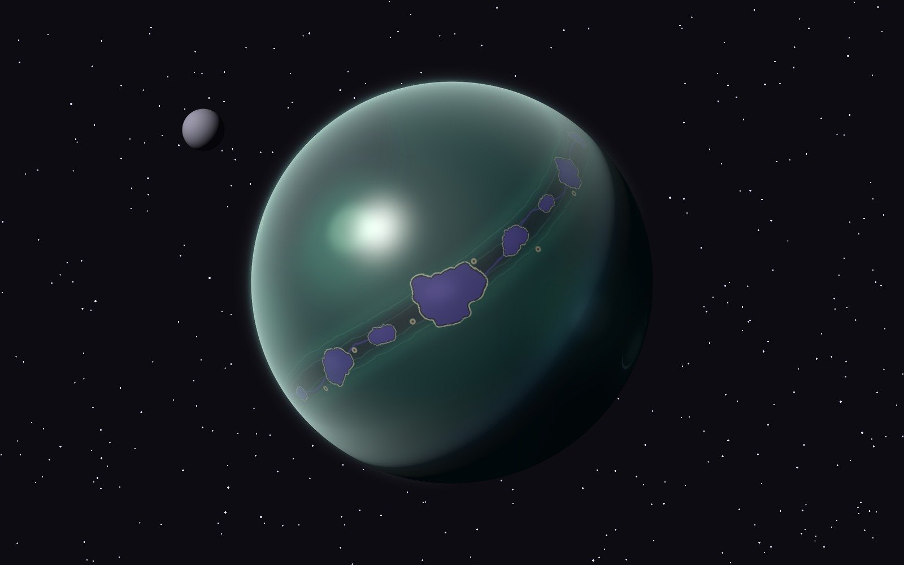
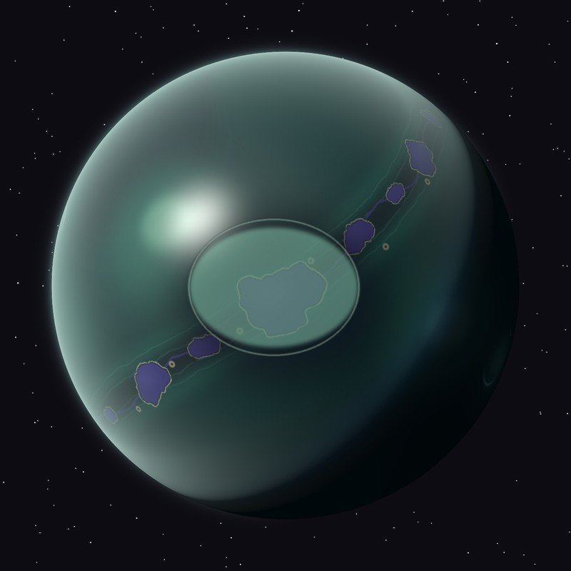
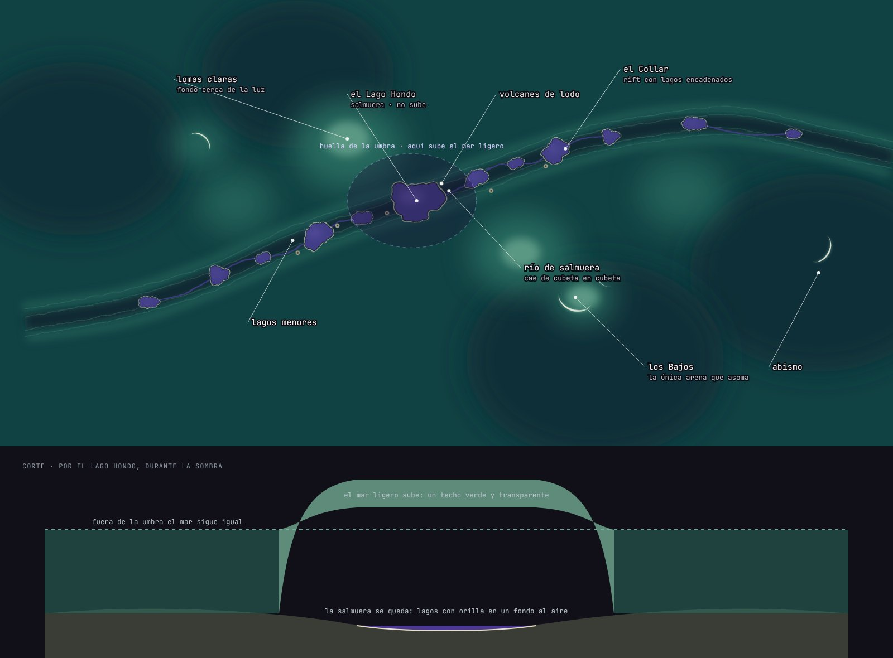
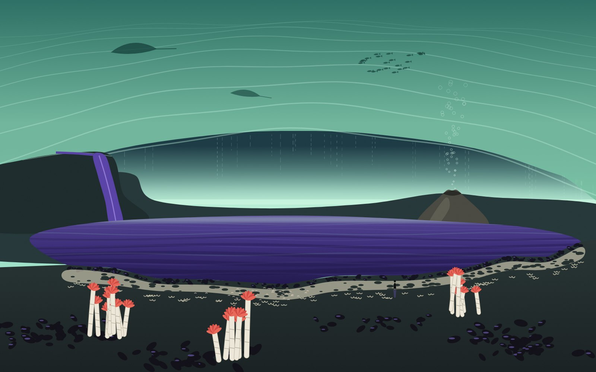
Lagos de salmuera del golfo de México, con orillas y olas lentas; ríos y cascadas de salmuera; filtraciones frías con mejillones y gusanos de tubo; volcanes de lodo; aguas muy transparentes del Pacífico sur. El rojo de los penachos es el único acento cálido.
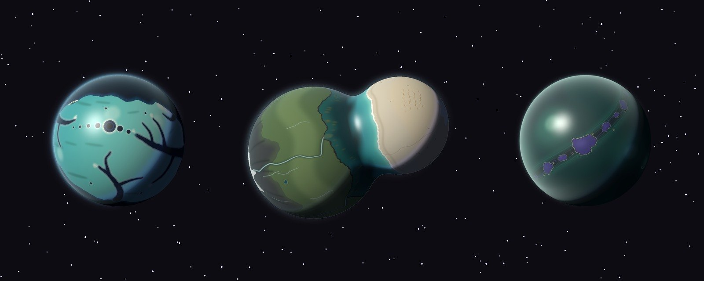
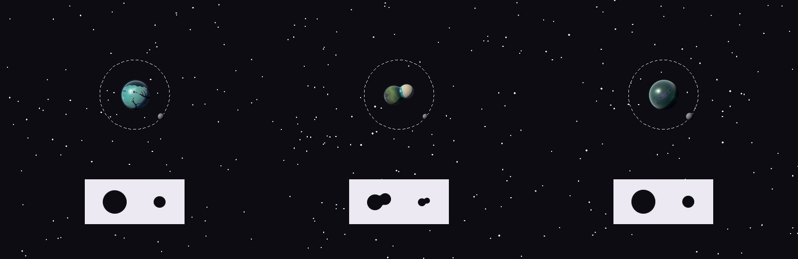
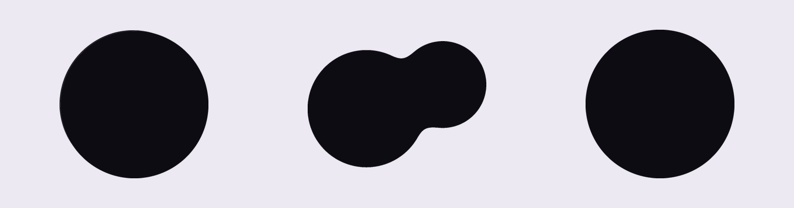
Lo que se ve al reducir: Las Dolinas se reconoce por el valor (es el único planeta claro) y por sus venas oscuras. La Cintura se reconoce por la forma, incluso en negro a 24 px. Los Dos Mares se pierde: a 64 px es una bola verde oscura y el collar violeta apenas se distingue. Su identidad depende de que el violeta tenga más contraste y de un collar más ancho, y aun así como silueta es un círculo.
| Criterio | I · Las Dolinas | II · La Cintura | III · Los Dos Mares |
|---|---|---|---|
| Es reconocible | ●●●●○Por valor y patrón; la silueta es una esfera | ●●●●●Por forma, también en negro y a 24 px | ●●○○○Se pierde a escala de carta |
| Tiene personalidad | ●●●●○Planeta claro con una línea de puntos | ●●●●●Dos mundos que comparten un mar | ●●●●○Inquietante y elegante |
| Parece un mundo, no un objeto | ●●●●●Lee como geografía real | ●●●○○Riesgo de «cacahuete»; los ríos y la escarcha lo salvan | ●●●●○Sin tierra a la vista: más océano que mundo |
| Geografía interesante | ●●●●○Cañones, banco, dolinas, cayos | ●●●●○Cimas, ríos, dos costas, estrecho | ●●●○○Toda está en el fondo; poco relieve |
| Invita a acercarse | ●●●●○Los pozos piden asomarse | ●●●●●Se ve el sitio al que ir: el cuello | ●●●○○El misterio está escondido |
| Fenómeno extraordinario | ●●●○○Muy bello de cerca; pequeño desde la órbita | ●●●●●Cambia la silueta del planeta | ●●●●○El techo verde y el horizonte de día |
| Sostiene una experiencia interactiva | ●●●●●Varias dolinas, túneles, combinaciones | ●●●●○Cruzar, recorrido anular | ●●●○○Recorrido lineal por el Collar |
| Identidad artística coherente | ●●●●○Turquesa propio, lejos del violeta | ●●●●○Material contra material | ●●●●●La más cercana a la paleta de gevorah |
Funciona. La regla «sólo sube el agua que nunca ve la luz» es clara, verosímil y produce un mundo con muchos sitios, lo que da la mejor base de juego de las tres. El planeta claro destaca entre los demás del universo.
No funciona aún. La silueta es una esfera y depende del color. Desde la órbita el fenómeno es pequeño: las lentes no cambian la lectura del planeta. Corre el riesgo de parecer «la Tierra bonita».
Funciona. La forma sale de la física: dos cuerpos unidos, el agua en el punto más bajo y los ríos bajando hacia él. Es la que mejor pasa la prueba de la carta y la única cuyo fenómeno cambia la silueta. La fantasía de cruzar a pie de un mundo a otro es inmediata.
No funciona aún. El arco de agua, mal resuelto, se lee como un asa añadida: el mismo error que el Gancho. Tiene que ser grueso, translúcido y con agua cayendo. La forma de dos lóbulos puede leerse como objeto si los materiales no se trabajan bien. Hay que distinguirla de las Hourglass Twins: aquí es un solo cuerpo.
Funciona. El paisaje revelado es el más sorprendente: un fondo marino al aire con lagos dentro, y un ecosistema que se entiende sin texto. Es la paleta más fiel al universo de gevorah.
No funciona aún. No se reconoce a escala de carta, no tiene tierra ni silueta propia y su geografía está toda en el fondo. Como planeta es la más débil, pero como lugar es la más fuerte.
Es la única que cumple a la vez las tres escalas: se reconoce como silueta, su geografía explica por sí sola dónde está el mar y su fenómeno se ve desde la órbita. Además ofrece una experiencia que se entiende sin instrucciones: cruzar el estrecho mientras dura la sombra.
Antes de aprobarla propongo resolver tres cosas en concept, no en 3D: (1) el arco de agua como masa translúcida y viva, para que no se lea como pieza añadida; (2) el carácter de cada lóbulo a distancia media, para que el cuerpo parezca un mundo y no un objeto; (3) qué hay en el fondo del estrecho además del arrecife. Para esto último, los lagos de salmuera de Los Dos Mares encajarían bien en las partes más hondas del cuello. Las Dolinas queda como alternativa si se prioriza la profundidad de interacción sobre la lectura orbital.
Las vistas orbitales son mapas pintados y proyectados con una luz simple: sirven para comprobar la lectura, no son el acabado. Les falta lo que aportaría un modelo cuidado en Blender: relieve real en las costas y acantilados, la atmósfera tratada como forma, el agua del fenómeno con volumen y transparencia, y en La Cintura un cuello modelado a mano en vez de una unión suavizada de dos esferas. Los estudios cercanos son ilustraciones planas para evaluar materiales, color y atmósfera, no encuadres de cámara.